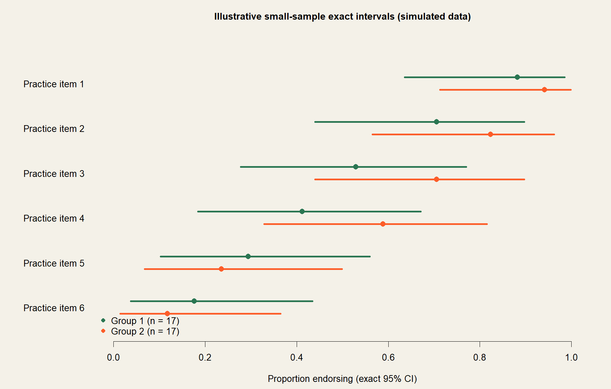

Thirty-Four Specialists and One Whitespace Bug
Thirty-four specialists across two countries answered a practice survey. At that sample size, every large-sample statistical default quietly breaks.
The clinical team wanted between-country and within-respondent comparisons from a small, precious sample. The project is unpublished, so the specialty and countries stay masked. Two things carried this analysis: exact methods everywhere, and a data-quality discovery that changed the paper's headline number.
How the problem became a design
Clinical question
How does real-world practice differ between two countries, and within the same clinician across patient groups?
The evidence
34 respondents, 17 per country, categorical answers with sparse cells everywhere
The design
Exact tests and exact intervals only, plus forensic validation of the export itself
The answer
Defensible comparisons at n = 34, and a corrected headline count the team could trust
The decisions that mattered
Fisher's exact test for every between-group comparison.
Chi-square approximations need expected cell counts this sample cannot provide. Exact tests cost nothing here and are correct by construction.
Exact McNemar for the within-respondent question.
When the same clinician answers for two patient groups, the comparison lives in the discordant pairs. A binomial test on those pairs is the exact version, and it needs no large-sample excuse.
Clopper-Pearson and Newcombe intervals for every reported proportion and difference.
At n = 17 per group, Wald intervals can escape the possible range. Exact and score intervals stay inside reality.
The forensics: two form deployments, distinguishable only by whitespace.
The export silently mixed two versions of the questionnaire whose answer options differed by invisible characters. Merging the cosmetic duplicates moved the headline count from 11 to 16 respondents. The fix is documented in a decision log and was independently re-verified by a second script.
What this looks like

Illustrative plot from simulated data: exact 95 percent intervals for two groups of 17. Wide intervals are the honest price of a small sample; the analysis never pretends otherwise.
The core of it, in R
# Between countries: exact, always
fisher.test(table(country, practice_item))
# Within the same respondent: exact McNemar via discordant pairs
d1 <- sum(ans_groupA == "yes" & ans_groupB == "no")
d2 <- sum(ans_groupA == "no" & ans_groupB == "yes")
binom.test(d1, d1 + d2)
# Exact interval for any reported proportion
binom.test(x, n)$conf.int # Clopper-Pearson
# And the forensics that mattered most:
# normalize whitespace BEFORE tabulating anything
answers <- trimws(gsub("\\s+", " ", answers))Where it landed
Delivered to the clinical team with the decision log and an independent verification script; the manuscript is in progress and the topic stays masked until it is out. The lesson this page keeps: at small n, the statistics must be exact, and the data deserve the same suspicion as the model.